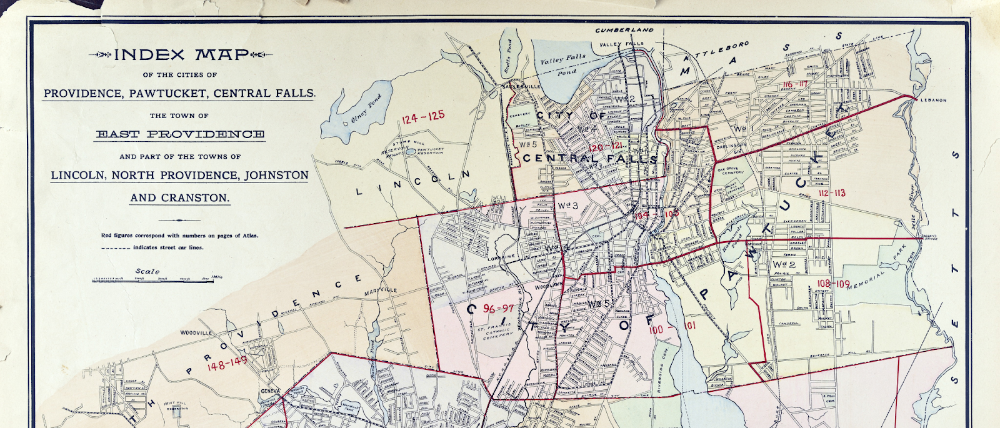

Overview Narrative
The Rhode Island General Assembly passed a law codifying a 10-hour workday which went into effect on June 1, 1902. The United Traction and Electric Company, the corporate entity which owned and operated streetcar lines within Rhode Island, challenged the legislation and sought to brand it as unconstitutional. On June 4, a strike was initiated by Division 200 of the Amalgamated Association of Street Railway Employes of America where hundreds of streetcar workers attempted to shut down operations of Rhode Island's vast network of streetcar lines. The strike encompassed much of the northeastern urban areas of the state, but there was so much disorder in the city of Pawtucket prompting the governor to deploy the state militia within the city.
The strike started in earnest on June 4, where union workers throughout Rhode Island voted to not show up to work. Local laborers, small businesses and residents throughout Rhode Island supported the strikers against the owners of the United Traction and Electric Company, which controlled most of the streetcar lines throughout the state. Although a majority of strikers were based out of Providence, the strike picked up support throughout all of Rhode Island’s municipalities. Streetcar lines connected in a vast web linking suburban and rural areas to the city centers. Pawtucket strikers were able to completely stop car service on the first day of the strike, and the city’s strikers were ultimately able to implement an effective streetcar boycott lasting over a month.

Other labor unions represented by textile workers, bartenders, plumbers, and weavers supported the strike. Residents throughout the state obstructed trolleys, destroyed property, and assaulted strike breakers and law enforcement. Pawtucket had a large working class community. Its mayor was John Fitzgerald, an Irish-American lawyer and state legislator. He campaigned on behalf of the laboring classes of Rhode Island, and believed the United Traction and Electric Company was treating its workers unfairly. Fitzgerald was no friend of the Railway Company, and had challenged them frequently the previous year and a half of his mayorship by ripping up railway lines on Pawtucket streets. He sympathized with the strikers, and The Providence Journal accused him of encouraging lawlessness. Eventually, deputy sheriffs were assigned to ride the trolley system throughout Pawtucket, but obstructions and acts of mob intimidation continued. Local newspapers reported daily on the violent confrontations between deputies and the public.
By June 12, the Governor of Rhode Island enacted the state militia to restore order to the city of Pawtucket. Legally, the 10-hour workday was still a point of contention, and both the company and the strikers refused to back down from their positions. Residents continued to wade into the streets of Pawtucket damaging trolleys and obstructing railways. The state-wide strike generated sports events, shows, music venues, and benefits to raise funds. Residents argued over whether or not the strike was justified. The strikers themselves hoped to force the company into following the 10-hour law. By positioning the United Traction and Electric Company as flouting the 10-hour law, they won overwhelming support throughout the state.
By July, the strike began to wane as it negatively impacted local businesses. It took a toll on streetcar workers who were not being paid, and on July 8, Pawtucket workers voted to end the strike. The winter following the strike, the 10-hour law was amended by the General Assembly, gutting it of enforcement. An effective 10-hour workday was not enacted into law until 1907.
Historiography
This project was inspired by the work of Scott Molloy, who has dedicated much of his career to telling the story of this strike. Molloy’s narrative provides a larger contextual analysis, including the history of public mass transportation in Rhode Island. He narrated the strike from a perspective of labor and capital, evaluating the causes, impact, failure, and consequences of the strike. The strike plays a larger role in Rhode Island’s history as a fulcrum point in state politics. The local Democratic Party utilized labor reform and anti-corporate rhetoric, continuing to attack the increasingly transparent Republican machine led by Boss Charles Brayton, Senator Nelson Aldrich, and Marsden Perry beginning a shift which would grow to define the emerging reform-oriented national Democratic Party.[1]
At the turn of the twentieth century America’s process of urbanization coincided with a revolution in electrical technology. David E. Nye evaluates the social and cultural impacts of society in Electrifying America. Technology transformed everyday life in the wake of the Industrial Revolution; the utilization of electricity improved mass transportation, evolving from the rail-guided horsecar to the electric streetcar. It allowed cities like Pawtucket to be visually brightened and introduced new forms of travel and entertainment. Trolleys were cleaner and faster than their horsecar predecessors. Less manure in city stables encouraged an increase in entertainment along main thoroughfares. At the same time, electrification enabled working class families to travel outside their dense urban neighborhoods. The traveled the electric powered railways to suburban and coastal leisure resorts, such as Warwick’s Rocky Point and Crescent Park in East Providence.[2]
The strike directly impacted the growing world of mass leisure and entertainment. As laborers fought for a shorter workday, the concept of leisure time in which workers and their families could experience mass-commercialized fun. David Nasaw examines the growth and change of public leisure into a democratic mass culture in Going Out: The Rise and Fall of Public Amusements. Urban and suburban workers utilized mass transportation to travel faster and farther away from their homes to experience leisure in other places. They also went downtown to experience entertainment at the local Music Hall and the Auditorium, and to shop at department stores. Live shows in Pawtucket and Providence, such as Buffalo Bill’s Wild West show, were reachable on trolley lines. Mass entertainment fused with labor reform as organizations initiated sporting events, musical acts and other shows to fundraise in support of strikers.[3]
In Rebirth of a Nation, Jackson Lears illustrates the cultural milieu across America at the turn of the twentieth century. From a materialist perspective, the Industrial Revolution was an era of increased income inequality as capitalist employers accrued wealth at the top of the economic pyramid. Nearer to the bottom, both skilled and unskilled laborers populated the growing number of industrial factories, mills, and mining facilities for iron, coal, and oil. Many of the emerging captains of industry, such as Andrew Carnegie, J.P. Morgan, and John D. Rockefeller, built large monopolistic corporate entities hiring thousands of laborers. This process was duplicated around the country. Americans moved from their rural farms into the cities seeking economic opportunity. So did European immigrants, first from Ireland and Germany, and then from southern Europe, eastern Europe, middle Americans from Mexico, Asian immigrants from China, and black Americans looking to expand their economic freedom. The cultural worldviews which developed between the wealthy patricians and the working classes were counterbalanced and in tension. Many of the emerging middle class Americans in professional occupations, as well as many skilled laborers, espoused an ideology of rugged individualism. Social theorist William Graham Sumner articulated a defense for capitalist meritorious success: “Let any one try to get a railroad built, or to start a factory and win reputation for its products, or to start a school and win a reputation for it, or to found a newspaper and make it a success, or to start any other enterprise, and he will find what obstacles must be overcome, what risks must be taken, what perseverance and courage are required, what foresight and sagacity are necessary.” This thinking was prominent at the upper echelons of society and conservative political circles. However, large swathes of laborers in industrial cities, such as in Pawtucket, conceived of class relations differently.[4]
The American Federation of Labor was a national trade union organization founded in 1886, and led by Samuel Gompers. Gompers began as a cigar maker who was involved in his union who believed the working classes should organize and bargain directly with employers for concessions. The labor leader used rhetoric that antagonized the capitalist classes—in 1893 he argued that “the separation between the capitalistic class and the laboring mass is… a difference in social status, placing the laborers in a position involving a degradation of mind and body.”[5] Trade union membership continued to grow throughout the last decade of the nineteenth century. Labor unions fought for a variety of reforms, including the right to organize, workplace safety, higher wages, a shorter work week, and shorter work days. Labor portrayed capitalists as detrimental to society: “The state of industrial anarchy produced by the capitalist system is first strongly illustrated in the existence of a class of wealthy social parasites; those who do no work, never did any work and never intend to work.”[6] The Amalgamated Association of Street Railway Employes of America became a member of the AFL. When local Division 200 struck in June 1902, they were channeling the language and momentum of the growing labor movement. As mayor of Pawtucket, John Fitzgerald espoused this rhetoric: “I believe in justice to all classes, special favors to none. I believe and will act on the belief, that the man who handles the pick and shovel, or who toils in the factory, is entitled to as much consideration as the man who sits in an easy chair in his office and clips coupons from his bonds or draws the interest from his investments.”[7]
Much of the messaging of strikers, politicians, and local strike supporters was communicated as uncomfortable resentment in response to the creation of large corporate entities across the United States. A national movement of trust consolidation occurred throughout 1897-1902; meaning many massive corporations bought out smaller ones and merged into effective monopolies. Naomi Lamoreaux looked at the systemization of mergers in The Great Merger Movement in American Business, 1895-1904 through the lens of an economic historian. She analyzed the mergers of the period and successfully explained the processes of consolidation.[8] Nationally, many Americans felt that these trusts were threatening the livelihoods of the middle and working classes. For example, President Theodore Roosevelt began involving himself in the anthracite coal strike that coincided with the Rhode Island streetcar strike in 1902. As the coal strike continued, he legitimized national labor organizations by mediating the conflict and forcing the mine owners to compromise. Prior to 1902, federal intervention in 1877 and 1893 had been to intervene on the side of businesses—usually with deadly consequence—but 1902 was a turning point for labor unionization.[9] In Rhode Island, the United Traction and Electric Company was acquired by “foreign investors” in Philadelphia who had the capital to take on risk and hopefully make a profit. The new organization was entitled the Rhode Island Company. The growth of a local streetcar system came to be dominated by outside investors, thereby taking agency and a sense of community away from both workers and passengers which, over time, fomented resentment. Supporters of the strike voiced these sympathies throughout the summer of 1902.
Pawtucket was a small industrial city; adjacent to Providence, but within the same network of urban laborers and ethnic communities. The social, economic, and political dynamics within the city created a tense atmosphere in the summer of 1902. The story of the strike is not just about labor and capital, but it adds to a fuller backdrop of intimate daily interactions between laborers, residents, politicians, and law enforcement. By studying these interactions—entertainment venues, fundraisers, political feuds, opinions of residents, demonstrations and even bouts of violence—we can grasp the realities of daily life. The story of 1902 Pawtucket helps illustrate the larger socio-cultural change taking place within America’s urban centers at the dawn of the Progressive Era.
1. Scott Molloy, "Rhode Island Communities and the 1902 Carmen's Strike," Radical History Review, 1978, no.17 (1978), 75-98; Scott Molloy, Trolley Wars: Streetcar Workers on the Line, (Smithsonian Institution Press, 1996).
2. David E. Nye, America : Social Meanings of a New Technology, 1880-1940, 1st MIT Press paperback ed. (Cambridge, Mass: MIT Press, 1992).
3. David Nasaw, Going Out: The Rise and Fall of Public Amusements, (New York: Basic Books, 1993); Molloy, Trolley Wars.
4. Jackson Lears, Rebirth of a Nation: The Making of Modern America, 1877–1920, (New York: Harper Perennial, 2010); William Graham Sumner, Classes Owe to Each Other, (New York: Harper and Brothers, 1911), 20.
5. Samuel Gompers, “What Does Labor Want?,” September 1893, accessed via The Samuel Gompers Papers, https://gompers.umd.edu/More.htm.
6. Gompers, “What Does Labor Want?"
7. John Fitzgerald, quoted in Molloy, Trolley Wars, 119.
8. Naomi R. Lamoreaux, The Great Merger Movement in American Business, 1895-1904, (Cambridge University Press, 1985).
9. Jonathan Grossman, “The Coal Strike of 1902—Turning Point in U.S. Policy,” Monthly Labor Review 98, no. 10 (1975): 21–28, http://www.jstor.org/stable/41839484.
Bibliography & Further Reading
- Grossman, Jonathan. “The Coal Strike of 1902—Turning Point in U.S. Policy.” Monthly Labor Review 98, no. 10 (1975): 21–28. http://www.stable/41839484.
- Lamoreaux, Naomi. The Great Merger Movement in American Business, 1895-1904. Cambridge University Press, 1985.
- Lears, Jackson. Rebirth of a Nation: The Making of Modern America, 1877–1920. Harper Perennial, 2010.
- Molloy, Scott. "Rhode Island Communities and the 1902 Carmen's Strike." Radical History Review, 1978, no.17 (1978), 75-98.
- Molloy, Scott. Trolley Wars: Streetcar Workers on the Line. Smithsonian Institution Press, 1996.
- Nasaw, David. Going Out: The Rise and Fall of Public Amusements. Basic Books, 1993.
- New Topographical Atlas of Surveys Providence County Rhode Island. Everts & Richards, 1895. In "(1895) New Topographical Atlas, Providence County (Everts & Richards)" by Pawtucket Public Library. Flickr. https://www.flickr.com/photos/pawtucketlibrary/albums/72157685969435954/with/29371441188/.
- Nye, David E. Electrifying America: Social Meanings of a New Technology, 1880-1940. 1st MIT Press paperback ed. Cambridge, Mass: MIT Press, 1992.
- Pawtucket Public Library. "Strike – Fitzgerald Rebellion." Flickr. https://www.flickr.com/photos/pawtucketlibrary/albums/72157709161422972/.
- Steffens, Lincoln. “Rhode Island: A State for Sale.” McClure’s Magazine 23, no. 4 (1905). Reprinted on Small State Big History. https://smallstatebighistory.com/rhode-island-state-sale/. April 28, 2017.
- The Evening Times. https://pawtucket.historyarchives.online/home.
- The Evening Bulletin. https://providencejournal.newsbank.com/.
- The Providence Journal. https://providencejournal.newsbank.com/.